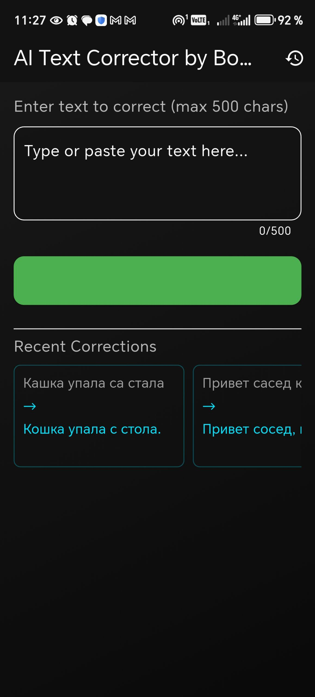
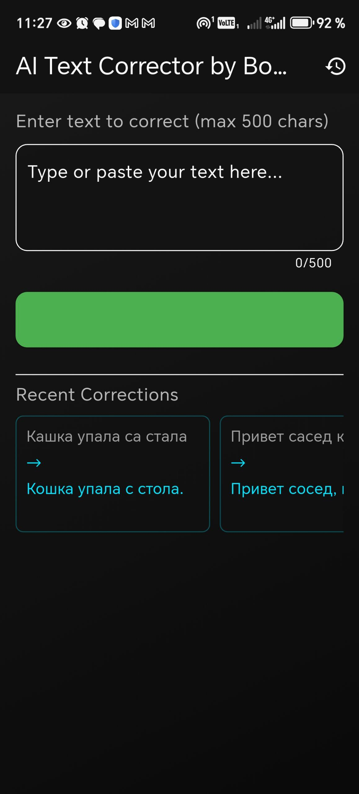

Мои Проекты
Readify: Интерактивный Учебник Чтения для Детей
Проект разработан для помощи детям в обучении чтению. Приложение предлагает структурированный подход через три уровня сложности (начальный, средний, продвинутый) и специальный раздел для изучения алфавита. Каждый уровень включает интерактивные задания, позволяющие детям осваивать чтение в увлекательной форме. Отличительной особенностью проекта является его автономность – он полностью функционален без использования внешних API, демонстрируя навык создания самодостаточных решений.
Технологии: Dart/Flutter.
AI Text Corrector: Многоязычный Корректор Текста на Базе ИИ
 

Это инновационное приложение предназначено для автоматической коррекции грамматических и орфографических ошибок. Оно поддерживает три языка — английский, русский и узбекский, что делает его универсальным инструментом для широкого круга пользователей, стремящихся улучшить качество своих текстов. Благодаря интеграции с OpenAI API, корректор обеспечивает высокую точность и глубокий анализ текста для выявления и исправления ошибок.
Ключевые особенности: Мультиязычность, интуитивный интерфейс, использование ИИ для точной коррекции, история последних исправлений.
Технологии: Python (для логики ИИ и API-интеграции), Dart/Flutter (для пользовательского интерфейса), OpenAI API.
Анализатор Диктанта: Интеллектуальная Проверка Текста
Этот проект предлагает многофункциональный инструмент для анализа и проверки текстов диктантов, поддерживающий работу на русском и узбекском языках. Он разработан для упрощения процесса проверки письменных работ, что делает его ценным решением для образовательных учреждений.
Ключевые особенности: Мультиязычность, поддержка загрузки текста из документов (Word/PDF), изображений (OCR) и ручного ввода, точный анализ ошибок с использованием ИИ (через OpenAI API).
Технологии: Python, (возможно, Dart/Flutter для интерфейса), OpenAI API.
Дополнительные Навыки и Опыт:
Я также имею опыт в написании Telegram-ботов, воронок и других простеньких ботов, что демонстрирует мою способность автоматизировать процессы и создавать интерактивные решения.